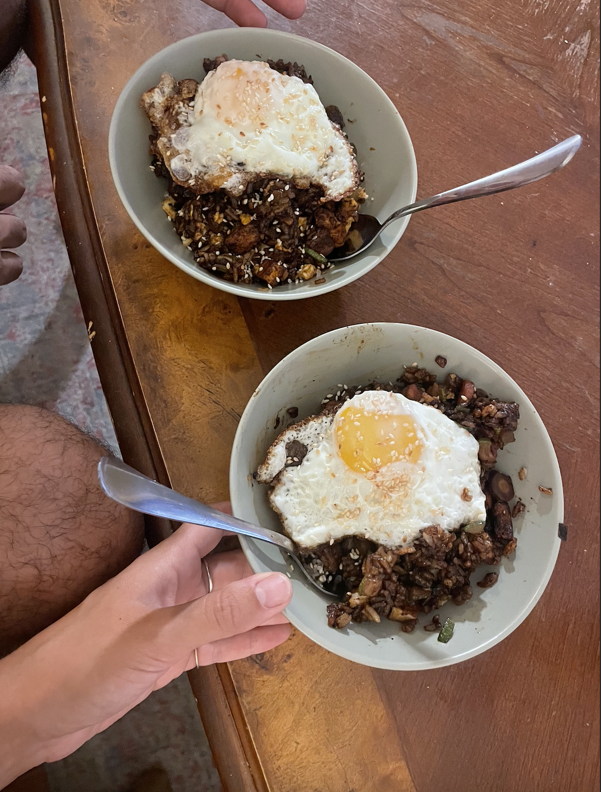

Brice's Fried Rice

This recipe is a spin on a korean dish called jjajangbap,
which is a rice dish with black bean sauce.
This version includes miso and gochujang to add depth and spice,
and is finished with a fried egg on top.
How To Make:
ingredients:
- 2 C cooked rice
- 2 tbsp chunjang (korean black bean paste)
- 1 tbsp gochujang
- 1 tbsp miso paste
- 1 tbsp rice vinegar
- 1 tbsp of sesame oil, split into 2 1/2 tbsps
- 1 egg
- chopped green onions and sesame seeds for garnish
steps:
- cook your rice according to package, make sure not to overcook.
- while rice is cooking, grab bowl. you get the rest.
- done!